화공기사(구) (2016-10-01 기출문제)
1과목: 화공열역학
1. 정압과정으로, 액체로부터 증기로 바뀌는 순수한 물질에 대한 깁스 자유에너지 G와 온도 T의 그래프를 옳게 나타낸 것은?
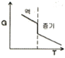
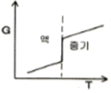
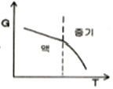
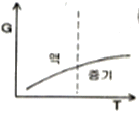
(정답률: 56%)

2. 주울-톰슨(Joule-Thomson)팽창은 다음 중 어느 과정에 속하는가?
- 등엔탈피과정
- 등엔트로피과정
- 정용과정
- 정압과정
(정답률: 67%)
3. 혼합물이 기-액 상평형을 이루고 압력과 기상조성이 주어졌을 때 온도와 액상조성을 계산하는 방법을 다음 중 무엇이라 하는가?
- BUBL P
- BUBL T
- DEW P
- DEW T
(정답률: 54%)
4. 역행응축(逆行凝縮, Retrograde condensation)현상을 가장 유용하게 쓸 수 있는 경우는?
- 천연가스 채굴시 동력없이 많은 앙의 액화 천연가스를 얻는다.
- 기체를 임계점에서 응축시켜 순수성분을 분리시킨다.
- 고체 혼합물을 기체화 시킨 후 다시 응축시켜 비휘발성 물질만을 얻는다.
- 냉동의 효율을 높이고 냉동제의 증발잠열을 최대로 이용한다.
(정답률: 80%)
5. 실제기체의 조름공정(Throtting process)을 전후해서 변하지 않는 성질은?
- 온도
- 엔탈피
- 압력
- 엔트로피
(정답률: 69%)
6. P-H 선도에서 등 엔트로피선의 기울기
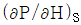
의 값은?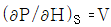
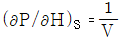
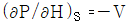
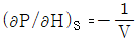
(정답률: 67%)
7. 다음 중 혼합물에서 성분 i의 화학포텐셜(chemical potential)을 올바르게 나타낸 것은?
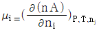
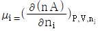
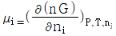
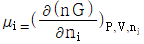
(정답률: 73%)
8. 같은 몰수의 벤젠과 톨루엔의 액체 혼합물이 303.15K에서 증기와 기-액 상평형을 이루고 있다. 라울의 법칙을 가정할 때 계의 총 압력과 벤젠의 증기 조성은 얼마인가?(단, 303.15k에서 벤젠의 증기압은 15.9kpa 톨루엔의 증기압은 4.9kpa이다)(오류 신고가 접수된 문제입니다. 반드시 정답과 해설을 확인하시기 바랍니다.)
- 전압=20.8kPa, 증기의 벤젠조성=0.236
- 전압=20.8kPa, 증기의 벤젠조성=0.764
- 전압=10.4kPa, 증기의 벤젠조성=0.236
- 전압=10.4kPa, 증기의 벤젠조성=0.764
(정답률: 63%)
9. 다음의 P-H선도에서 H2-H1의 값은 무엇에 해당하는가?
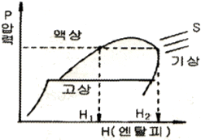
- 혼합열
- 승화열
- 증발열
- 융해열
(정답률: 78%)
10. 열과 일 사이의 에너지 보존의 원리를 표현한 법칙은?
- 보일 샤를의 법칙
- 열역학 제1법칙
- 열역학 제2법칙
- 열역학 제3법칙
(정답률: 74%)
11. 3개의 기체화학종(Chemical species) N2H2NH3로 구성되어 다음의 화학반응이 일어나는 반응계의 자유도는?
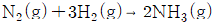
- 0
- 1
- 2
- 3
(정답률: 67%)
12. 디젤(Diesel) 엔진의 사이클 중 연소는 열역학적으로 다음의 어느 과정에서 일어나는가?
- 정용과정
- 등압과정
- 단열과정
- 등엔탈피과정
(정답률: 53%)
13. 컴퓨터를 이용한 이성분계 계산에 대한 설명 중 적합하지 않은 것은?
- 등온 플래시 계단은 온도, 압력을 주고 기상, 액상의 몰 조성을 구하는 계산이다.
- 등온 플래시 계산은 뉴튼의 방법 같은 반복계산을 통해서 계산된다.
- 평형상수를 이용하면 반응의 속도를 정확히 알 수 있다.
- 평형상수를 이용하면 반응 후 최종 조성을 정확히 알 수 있다.
(정답률: 66%)
14. 디젤기관(Diesel cycle)과 오토기관(Otto cycle)에 대한 설명으로 옳은 것은?
- 두 기관 모두 효율은 압축비와 무관하게 결정된다.
- 디젤기관(Diesel cycle)은 2새의 정용과정이 있다.
- 같은 압축비에 대하여 오토기관(Otto cycle)은 디젤기관(Diesel cycle)보다 효율이 좋다.
- 오토기관(Otto cycle)은 1개의 정용과정과 1개의 정압과정이 있다.
(정답률: 73%)
15. 퓨개시티(Fugacity) fi및 퓨개시티 계수
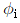
에 관한 설명으로 틀린 것은?(단,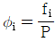
이다.)- 이상기체에 대한
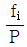
의 값은 1이 된다. - 잔류 깁스(Gibbs) 에너지
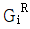
과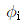
와의 관계는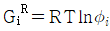
로 표시된다 - 퓨개시티 계수
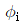
의 단위는 압력의 단위를 가진다. - 주어진 성분의 퓨개시티가 모든 상에서 동일할 때 접촉하고 있는 상들은 평형 상태에 도달할 수 있다.
(정답률: 68%)
16. 이성분 혼합용액에 관한 라울(Raoult)의 법칙으로 옳은 것은?(단, YiXi는 기상 및 액상의 몰분율을 의미한다.)
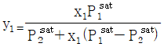
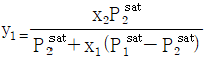
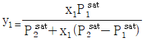
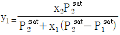
(정답률: 58%)
17. 60기압의 기체(
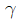
=1.33)가 들어 있는 탱크에 수렴노즐(convergent nozzle)을 연결하여 이 기체를 다른 탱크로 뽑아내고자 할 때 가장 빨리 뽑아내기 위해서는 제 2의 탱크 압력을 몇 기압으로 유지시켜야 하는가? (단, 기체는 이상기체, 는 비열비이다.)
는 비열비이다.)- 3.24기압
- 32.4기압
- 4.51기압
- 45.1기압
(정답률: 31%)
18. 두 성분이 완전 혼합되어 하나의 이상용액을 형성할 때 한성분 i의 화학포텐셜 μi는 μoi(T,P)+RTlnXi 로 표시할 수 있다. 동일 온도와 압력 하에서 한성분 i의 순수한 화학 포텐셜 μpurei는 어떻게 나타낼 수 있는가?
- μPurei=μoi(T,P)+RT+lnXi
- μPurei=RTlnXi
- μPurei=μoi(T,P)+RT
- μPurei=μoi(T,P)
(정답률: 51%)
19. CP/CV=1.4인 공기 1m3을 5atm에서 20atm으로 단열압축 시 최종체적은 얼마인가?(단, 이상기체로 가정한다.)
- 0.18m3
- 0.37m3
- 0.74m3
- 3.7m3
(정답률: 68%)
20. 상태방정식에 대한 설명으로 틀린 것은?
- 삼차 상태방정식은 압력을 온도와 부피의 항으로 표시한다.
- 삼차 상태방정식은 3개 또는 1개의 실근을 가진다.
- 삼차 상태방정식을 이용하면 기체 혼합물의 잔류물성(Residual Propreties)을 계산할 수 있다.
- 삼차 상태방정식을 이용하여 기준 물성(
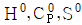
)등을 계산할 수 있다.
(정답률: 40%)
2과목: 단위조작 및 화학공업양론
21. 정상상태로 흐르는 유체가 유로의 확대된 부분을 흐를 대 변화하지 않는 것은?
- 유량
- 유속
- 압력
- 유동단면적
(정답률: 68%)
22. 25℃에서 10L의 이상기체를 1.5L까지 정온 압축시켰을 때 주위로부터 2250cal의 일을 받았다면 이 이상기체는 몇 mol인가?
- 0.5mol
- 1mol
- 2mol
- 3mol
(정답률: 62%)
23. 이상기체 1몰이 300K에서 100kPa로부터 400kPa로 가역과정으로 등온 압축되었다. 이 때 작용한 일의 크기를 옳게 나타낸 것은?
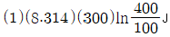
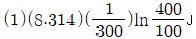
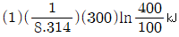
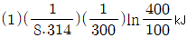
(정답률: 70%)
24. 톨루엔 속에 녹은 40%의 이염화에틸렌용액이 매 시간 100mol씩 증류탑 중간으로 공급되고 탑 속의 축적량 없이 두 곳으로 나간다. 위로 올라가는 것을 증류물이라 하고, 밑으로 나가는 것을 잔류물이라 한다. 증류물은 이염화에틸렌 95%를 가졌고 잔류물은 이염화에틸렌 10%를 가졌다고 할 때 각 흐름의 속도는 약 몇 mol/h 인가?
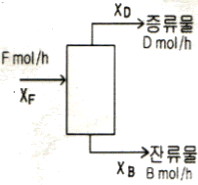
- D=0.35 B=0.64
- D=64.7 B=35.3
- D=35.3 B=64.7
- D=0.64 B=0.35
(정답률: 65%)
25. 대기압이 760mmHg 이고 기온이 30℃인 공기의 밀도는 약 몇 kg/m3인가?
- 1.167
- 1.206
- 1.513
- 1.825
(정답률: 65%)
26. 이상기체에서 단열공정(adiabatic process)에 대한 관계를 옳게 나타낸 것은?(단, K는 비열비이다.)
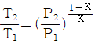
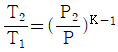
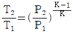
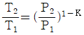
(정답률: 66%)
27. Hess 의 법칙에 대한 설명으로 옳은 것은?
- 정압하에서 열(QP)을 추산하는 데 무관한 법칙이다.
- 경로함수의 성질을 이용하는 법칙이다.
- 상태함수의 변화치를 추산하는데 이용할 수 없는 법칙이다.
- 엔탈피 변화는 초기 및 최종상태에만 의존한다.
(정답률: 56%)
28. 혼합물인 공기의 조성은 질소(N2) 79mol%, 산소(O2) 21mol%이다. 공기를 이상기체로 가정했을 때 질소의 질량분율은 얼마인가?
- 0.325
- 0.531
- 0.767
- 0.923
(정답률: 69%)
29. 다음 중 가장 낮은 압력을 나타내는 것은?
- 760mmHg
- 101.3kPa
- 14.2psi
- 1bar
(정답률: 63%)
30. 1atm, 25℃에서 상대습도가 50%인 공기 1m3중에 포함되어 있는 수증기의 양은? (단, 25℃에서 수증기의 증기압은 24mmHg이다.)
- 11.6g
- 12.5g
- 28.8g
- 51.5g
(정답률: 46%)
31. Isotropic turbulent란?
- 난류에서 x, y, z 세 방향의 편차속도의 자승의 평균값이 모두 다른 경우
- 난류에서 x, y, z 세 방향의 편차속도의 자승의 평균값이 모두 같은 경우
- 난류의 편차속도가 x, y, z 세 방향에 대하여 서로 다른 경우
- 난류의 편차속도가 x, y, z 세 방향에 대하여 서로 같은 경우
(정답률: 46%)
32. 건조 조작에서 대료의 임계(critical)함수율이란?
- 건조속도가 0 일 때 함수율
- 감율 건조가 끝나는 때의 함수율
- 항률 단계에서 감율 단계로 바뀌는 함수율
- 건조 조작이 끝나는 함수율
(정답률: 72%)
33. [그림]은 충전흡수탑에서 기체의 유량변화에 따른 압력강하를 나타낸 것이다. 부하점(Loading point)에 해당하는 곳은?
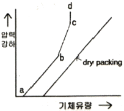
- a
- b
- c
- d
(정답률: 59%)
34. 기체 흡수 설계에 있어서 평행선과 조작선이 직선일 경우 이동단위높이(HTU)와 이동단위수(NTU)에 대한 해석으로 옳지 않은 것은?
- HTU는 대수 평균 농도차(평균추진력)만큼의 농도변화가 일어나는 탑 높이이다.
- NTU는 전탑 내에서 농도 변화를 대수 평균 농도차로 나눈 값이다.
- HTU는 NTU로 전충전고를 나눈 값이다
- NTU는 평균 불활성 성분 조성의 역수이다.
(정답률: 38%)
35. 증류에 있어서 원료 흐름 중 기화된 증기의 분율을 f라 할 때 f에 대한 표현 중 틀린 것은?
- 원료가 포화액체일 때 f = 0
- 원료가 포화증기일 때 f = 1
- 원료가 증기와 액체 혼합물일 때 0 ＜ f ＜ 1
- 원료가 과열증기일 때 f ＜ 1
(정답률: 67%)
36. p-Xylene 40mol%, o-Xylene 60mol% 인 혼합물을 비점으로 연속 공급하여 탑정 중의 p-Xylene을 95mol%로 만들고자 한다. 비휘발도가 1.5라면 최소환류비는 얼마인가?
- 1.5
- 2.5
- 3.5
- 4.5
(정답률: 31%)
37. 공비 혼합물에 관한 설명으로 거리가 먼 것은?
- 보통의 증류방법으로 고순도의 제품을 얻을 수 없다.
- 비점도표에서 극소 또는 극대점을 나타낼 수 있다.
- 상대휘발도가 1이다.
- 전압을 변화시켜도 공비 혼합물의 조성과 비점이 변하지 않는다.
(정답률: 48%)
38. 태양광선 중 최대강도를 갖는 파장이 6×10cm-5라고 할 때 비인(Wien)의 변위법칙을 사용하여 태양의 표면온도를 구하면? (단, 상수값은 2.89×10-3mK이다.)
- 약 4,544℃
- 약 5,011℃
- 약 5,500℃
- 약 6,010℃
(정답률: 46%)
39. 2중관 열교환기를 사용하여 500kg/h의 기름을 240℃의 포화수증기를 써서 60℃에서 200℃까지 가열하고자 한다. 이때 총괄전열계수가 500kcal/m2ㆍhㆍ℃, 기름의 정압비열은 1.0kcal/kgㆍ℃이다. 필요한 가열면적은 몇 m2인가?(오류 신고가 접수된 문제입니다. 반드시 정답과 해설을 확인하시기 바랍니다.)
- 3.1
- 2.4
- 1.8
- 1.5
(정답률: 44%)
40. 다음중 고점도를 갖는 액체를 혼합하는데 가장 적합한 교반기는?
- 공기(air) 교반기
- 터빈(turbine) 교반기
- 프로펠러(propeller) 교반기
- 나선형 리본(helical-ribbon) 교반기
(정답률: 49%)
3과목: 공정제어
41. 주제어기의 출력신호가 종속제어기의 목표값으로 사용되는 제어는?
- 비율제어
- 내부모델제어
- 예측제어
- 다단제어
(정답률: 58%)
42. 다음 공정은 2/(2S+1)이고 거기에 PI제어기(Kc =0.5, τI=1)가 연결되어 있을 때 설정값에 대한 출력의 닫힌루프(closed-loop) 전달함수는? (단, 나머지 요소의 전달함수는 1이다.)
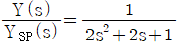
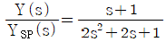
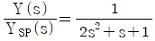
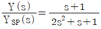
(정답률: 38%)
43. PID제어기에서 적분동작에 대한 설명 중 틀린 것은?
- 제어기 입력신호의 절대값을 적분한다.
- 설정점과 제어변수 간의 오프셋을 제거해준다.
- 적분상수 τI가 클수록 적분동작이 줄어든다.
- 제어기 이득 Kc가 클수록 적분동작이 커진다.
(정답률: 33%)
44. 일차계 전달함수 G(s)=
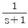
의 구석점 주파수(corner frequency)에서 이 일차계 2개가 직렬로 연결된 Goverall(s)의 위상각(phase angle)은 얼마인가?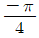
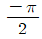
- -π
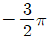
(정답률: 39%)
45. 동일한 2개의 1차계가 상호작용 없이(non interacting) 직렬연결 되어 있는 계는 다음 중 어느 경우의 2차계와 같이지는가? (단,  는 감쇄계수(damping coeffient)이다.)
는 감쇄계수(damping coeffient)이다.)
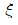
＞ 1 = 1
= 1 ＜ 1
＜ 1 = ∞
= ∞
(정답률: 60%)
46. 다음은 parallel cascade 제어시스템의 한 예이다. D(s)와 Y(s)사이의 전달함수 Y(s)/D(s)는?
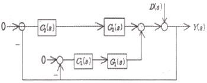
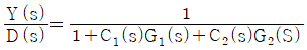
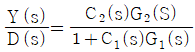
(정답률: 47%)
47. 다음 블록선도로부터 서보 문제(Servo problem)에 대한 총괄전달함수 C/R 는?
(정답률: 66%)
48. 다음과 같은 블록 다이어그램에서 총괄전달함수(overall transfer function)는?
(정답률: 69%)
49. 아날로그 계장의 경우, 센서 정송기의 출력신호, 제어기의 출력신호는 흔히 4~20mA의 전류로 전송된다. 이에 대한 설명으로 틀린 것은?
- 전류신호는 전압신호에 비하여 장거리 전송시 전자기적 잡음에 덜 민감하다.
- 0%를 4mA로 설정한 이유는 신호선의 단락여부를 쉽게 판단하고, 0% 신호에서도 전자기적 잡음에 덜 민감하게 하기 위함이다.
- 0~150℃의 범위를 측정하는 전송기의 이득은 150/16(℃/mA)이다.
- 제어기 출력으로 ATC(Air-To-Close)밸브를 동작시키는 경우, 8mA에서 밸브 열림도 (valve position)가 0.75 가 된다.
(정답률: 52%)
50. 다음 전달함수를 갖는 계 중 sin 응답에서 Phase lead를 나타내는 것은?
- e-τs
- 1+τS
(정답률: 39%)
51. 안정도 판정에 사용되는 열린루프 전달함수가 G(s)H(s)= 인 제어계에서 이득여유가 2.0 이면 K 값은 얼마인가?
- 1.0
- 2.0
- 5.0
- 10.0
(정답률: 28%)
52. 다음의 2차계들 중 어느 것이 1차계 2개를 직렬로 연결한 것과 같은 가?
- 1/(S2+3S+2)
- 1/(S2+0.9S+0.7)
- 1/(S2+5)
- 1/(S2+S+2)
(정답률: 64%)
53. 2차계에 단위계단입력이 가해져서 자연진동(진폭이 일정한 지속적 진동)을 할 때 이 계의 특징을 옳게 설명한 것은?
- 제동비(damping ratio) 값이 0이다.
- 제동비(damping ratio) 값이 1이다.
- 시간상수 값이 1이다.
- 2차계는 자연진동할 수 없다.
(정답률: 30%)
54. 비례대가 거의 영에 가까운 제어동작은?
- PD 제어동작
- PI 제어동작
- PID 제어동작
- on-off 제어동작
(정답률: 64%)
55. 어떤 증류탑의 응축기에서 유입되는 증기의 유량은 V, 주성분의 몰분율은 y, 재순환되는 액체 유량은 R, 생성물로 얻어지는 유량은 D, 생성물의 주성분 몰분율은 x이다. 응축기 드럼내의 액체량(hold-up)을 M이라 할 때 성분수지식으로 맞는 것은?
(정답률: 39%)
56. 사람이 원하는 속도, 원하는 방향으로 자동차를 운전할 때 일어나는 상황이 공정제어 시스템과 비교될 때 연결이 잘못된 것은?
- 눈 - 계측기
- 손 - 제어기
- 발 - 최종 제어 요소
- 공정 - 자동차
(정답률: 47%)
57. 공정의 정상상태 이득(k), ultimate gain(Kcu) 그리고 ultimare periode(Pu) 를 실험으로 측정하였다. k=2, Kcu=3, Pu=3.14일 때, 이와 같은 결과를 주는 일차시간지연 모델, 이와 같은 결과를 주는 일차시간지연 모델, 의 시간상수 τ를 구하면?
- 1.414
- 2.958
- 3.163
- 3.872
(정답률: 30%)
58. 다음 미분방적식을 라플라스 변환시키면?
- Y(s)=
- Y(s)
- Y(s)
- Y(s)
(정답률: 46%)
59. 라플라스 변환의 주요 목적은?
- 비선형 대수방정식을 선형 대수방정식으로 변환
- 비선형 미분방정식을 선형 미분방정식으로 변환
- 선형 미분방정식을 대수방정식으로 변환
- 비선형 미분방정식을 대수방정식으로 변환
(정답률: 45%)
60. 시간지연항의 성격에 대한 설명으로 옳지 않은 것은?
- 공정의 측정지연, 이송지연을 표현하기도 하며, 또한 고차 전달함수를 간략하게 표현하기 위한 용도로도 사용된다.
- 어떤 전달함수를 공정에 시간지연이 더해지면 더해지지 않을 때에 비하여 한계이득(ultimate gain)이 작아진다.
- 어떤 전달함수 공정에 시간지연이 더해지면 더해지지 않을 때에 비하여 한계주파수(ultimate 혹은 crossover frequency)가 감소한다.
- 주파수의 증가에 따라 위상각(phase angle)이 음의 방향으로 지수적으로 증가하기 때문에 피드백 제어계에 좋지 않은 영향을 준다.
(정답률: 34%)
4과목: 공업화학
61. 인광석에 의한 과린산석회 비료의 제조공정 화학반응식으로 옳은 것은?
(정답률: 44%)
62. 페놀을 수소화한 후 질산으로 산화시킬 때 생성되는 주 생성물은 무엇인가?
- 프탈산
- 아디프산
- 시클로헥산올
- 말레산
(정답률: 54%)
63. 암모니아 산화법에 의하여 질산을 제조하면 상압에서 순도가 약 65% 내외가 되어 공업적으로 사용하기 힘들다. 이럴 경우 순도를 높이기 위해 일반적으로 어떻게 하는가?
- 의 흡수제를 첨가하여 3성분계를 만들어 농축한다.
- 온도를 높여 끓여서 물을 날려 보낸다.
- 촉매를 첨가하여 부가반응을 시킨다.
- 계면활성제를 사용하여 물을 제거한다.
(정답률: 57%)
64. 고분자의 결정구조를 분석할 수 있는 방법은?
- FT-IR
- X-선 회절
- NMR
- UV-visible spectroscopy
(정답률: 60%)
65. 아세트산알데히드가 산화되어 생성되는 주요물질은?
- 프탈산
- 벤조산
- 아세트산
- 피크르산
(정답률: 68%)
66. 연실법 황산제조 공정에서 질소 산화물 공급을 위해 HNO3를 사용할 수 있다. 36wt%의 HNO3용액 10kg으로부터 약 몇 kg의 NO가 발생할 수 있는가?
- 1.72
- 3.43
- 6.86
- 10.29
(정답률: 54%)
67. 정유공정에서 감압증류법을 사용하여 유분을 감압하는 가장 큰 이유는 무엇인가?
- 공정 압력손실을 줄이기 위해
- 석유의 열분해를 방지하기 위해
- 고온에서 증류하여 수율을 증가시키기 위해
- 제품의 점도를 낮추어 주기 위해
(정답률: 56%)
68. 원유 정유공정에서 비점이 낮은 순으로부터 옳게 나열된 것은?
- 가스-경유-중유-등유-나프타-아스팔트
- 가스-경유-등유-중유-아스팔트-나프타
- 가스-나프타-등유-경유-중유-아스팔트
- 가스-나프타-경유-등유-중유-아스팔트
(정답률: 58%)
69. 200℃에서 활성탄 담체를 촉매로 아세틸렌에 아세트산을 작용시키면 생성되는 주 물질은?
- 비닐에테르
- 비닐카르복실산
- 비닐아세테이트
- 비닐알코올
(정답률: 60%)
70. 다음 물질 중 친전자적 치환반응이 일어나기 쉽게 하여 술폰화가 가장 용이하게 일어나는 것은?
- C6H5NO2
- C6H5NH2
- C6H5SO3H
- C6H4(NO2)2
(정답률: 54%)
71. 다음 중 사슬중합(혹은 연쇄중합)에 대한 설명으로 옳은 것은?
- 중합말기의 매우 높은 전환율에서 고분자량의 고분자사슬이 생성된다.
- 주로 비닐 단량체의 중합이 이에 해당한다.
- 단량체의 농도는 단계중합에 비해 급격히 감소한다.
- 단량체는 서로 반응할 수 있는 관능기를 가지고 있어야 한다.
(정답률: 41%)
72. 다음 중 유기용매 중에서 물과 가장 섞이지 않는 것은?
- CH3COCH3
- CH3COOH
- C2H6OH
- C2H5OC2H5
(정답률: 60%)
73. 질산제조에서 암모니아 산화에 사용되는 촉매에 대한 설명 중 옳은 것은?
- 가장 널리 사용되는 것은 Pt-Bi 이다.
- Pt 계의 일반적인 수명은 1개월 정도이다.
- 공업적으로 Fe-Bi 계는 작업범위가 가장 넓다.
- 산화코발트의 조성은 CO3O4이다.
(정답률: 61%)
74. 다음 반응식으로 공기를 이용한 산화반응을 하고자 한다. 공기와 NH3의 혼합가스 중 NH3부피 백분율은?
- 44.4
- 34.4
- 24.4
- 14.4
(정답률: 48%)
75. 무수염산의 제법에 속하지 않는 것은?
- 직접합성법
- 농염산증류법
- 염산분해법
- 흡착법
(정답률: 44%)
76. 비료중 P2O5이 많은 순서대로 열겨된 것은?
- 과린산석회 ＞ 용성인비 ＞ 중과린산석회
- 용성인비 ＞ 중과린산석회 ＞ 과린산석회
- 과린산석회 ＞ 중과린산석회 ＞ 용성인비
- 중과린산석회 ＞ 소성인비 ＞ 과린산석회
(정답률: 61%)
77. 일반적인 성질이 열경화성 수지에 해당하지 않는 것은?
- 페놀수지
- 폴리우레탄
- 요소수지
- 폴리프로필렌
(정답률: 62%)
78. 건식법 H3PO4제조의 원료로서 적합한 것은?
- 인광석, 규사, 코크스
- 인광석, 석회암, 규사
- 석회석, 사문암, 코크스
- 백운석, 황산, 규사
(정답률: 60%)
79. 제염방법 중 해수를 가열하여 농축된 슬러리를 건조기로 보낸 후 소금을 얻는 방식으로 각종 미네랄 및 흡습방지 성분이 포함되어 식탁염을 생산하는 것은?
- 진공증발법
- 증기압축식 증발법
- 액중 연소법
- 이온수지막법
(정답률: 47%)
80. 니트로화합물 중 트리니트로톨루엔에 관한 설명으로 틀린 것은?
- 물에 매우 잘 녹는다.
- 톨루엔을 니트로화하여 제조 할 수 있다.
- 폭발물질로 많이 이용된다.
- 공업용 제품은 담황색 결정형태이다.
(정답률: 65%)
5과목: 반응공학
81. N220%, H2 80%로 구성된 혼합 가스가 암모니아 합성 반응기에 들어갈 때 체적 변화율 는?
- -0.4
- -0.5
- 0.4
- 0.5
(정답률: 53%)
82. A 분해반응의 1차 반응속도 상수는 0.345/min 이고 반응초기의 농도 CAO가 2.4mol/L이다. 정용 회분식 반응기에서 A의 농도가 0.9mol/L 될 때까지의 시간은?
- 1.84min
- 2.84min
- 3.84min
- 4.84min
(정답률: 58%)
83. 다음과 같은 기상반응이 30L 정용회분반응기에서 등온적으로 일어난다. 초기 A가 30mol 이 들어있으며, 반응기는 완전 혼합된다고 할 때 1차 반응일 경우 반응기에서 A의 몰수가 0.2mol로 줄어드는데 필요한 시간은?(단, A → B, -rA = kCA, k=0.865/min)
- 7.1min
- 8.0min
- 6.3min
- 5.8min
(정답률: 40%)
84. A+B→R 인 비가역 기상 반응에 대해 다음과 같은 실험 데이터를 얻었다. 반응 속도식으로 옳은 것은?(단, t1/2은 B의 반감기이고 PA 및 PB 는 각각 A 및 B의 초기 압력이다.)
(정답률: 47%)
85. 액체물질 A가 플러그흐름 반응기 내에서 비가역 2차 반응 속도식에 의하여 반응되어 95%의 전화율을 얻었다. 기존 반응기와 크기가 같은 반응기를 한 개 더 구입해서 같은 전화율을 얻기 위하여 두 반응기를 직렬로 연결한다면 공급속도 FA0는 몇배로 증가시켜야 하는가?
- 0.5
- 1
- 1.5
- 2
(정답률: 42%)
86. 다음과 같은 자동촉매 반응에서 A가 분해되는 속도 -rA와 A의 농도비 CA/CA0를 그래프로 그리면 어떤 형태가 되겠는가?(단, CA0 : A의 초기농도, CA : A의 농도, CR : R의 농도, K : 속도상수)
(정답률: 54%)
87. 다음 그림에 해당되는 반응 형태는?
(정답률: 39%)
88. 다음과 같은 1차 병렬 반응이 일정한 온도의 회분식 반응기에서 징행되었다. 반응시간이 1000s일 때 반응물 A가 90%분해되어 생성물은 R이 S의 10배로 생성되었다. 반응초기에 R과 S의 농도를 0으로 할 때, K1및 K1/K2은 각각 얼마인가?
- K1 = 0.131/min, K1/K2 = 20
- K1 = 0.046/min, K1/K2 = 10
- K1 = 0.131/min, K1/K2 = 10
- K1 = 0.046/min, K1/K2 = 20
(정답률: 52%)
89. 다음 반응이 기초 반응(elementary reaction)이라고 가정하면 이 반응의 분자도(molecularity)는 얼마인가?
- 1
- 2
- 3
- 4
(정답률: 45%)
90. 비가역 1차 액상반응을 부피가 다른 두 개의 이상혼합 반응기에서 다른 조건은 같게하여 반응시켰더니 전환율이 각각 40%, 60%이었다면 두 반응기의 부피비(V40%/V60%)는 얼마인가?
- 1/3
- 4/9
- 2/3
- 3/2
(정답률: 50%)
91. 자동 촉매반응에서 최소 부피의 반응기 선정에 관한 내용으로 가장 적당한 것은?
- 혼합 흐름 반응기가 유리하다.
- 플러그 흐름 반응기가 유리하다.
- 전화율에 따라 유리한 반응기가 다르다.
- 전화율과 무관하게 어떤 반응기를 사용해도 된다.
(정답률: 43%)
92. 1차 비가역 액상반응이 일어나는 관형반응기에서 공간시간은 2min이고 전환율이 40%였을 때 전환율이 90%로 하려면 공간시간은 얼마가 되어야 하는가?
- 0.26min
- 0.39min
- 5.59min
- 9.02min
(정답률: 58%)
93. 공간 시간이 5분이라고 할 때의 설명으로 옳은 것은?
- 5분 안에 100% 전화율을 얻을 수 있다.
- 반응기 부피의 5배 되는 원료를 처리할 수 있다.
- 매 5분마다 반응기 부피만큼의 공급물이 반응기에서 처리된다.
- 5분동안에 반응기 부피의 5배 원료를 도입한다.
(정답률: 66%)
94. 동일 조업조건, 일정밀도와 등온, 등압하의 CSTR과 PFR에서 반응이 진행될 때 반응기부피를 옳게 설명한 것은?
- 반응차수가 0보다 크면 PFR 부피가 CSTR보다 크다.
- 반응차수가 0이면 두반응기 부피가 같다.
- 반응차수가 커지면 CSTR 부피는 PFR 보다 작다.
- 반응차수와 전화율은 반응기 부피에 무관하다.
(정답률: 48%)
95. 균일계 액상반응 A→R→S에서 1단계는 2차 반응, 2단계는 1차 반응으로 진행되고 R이 원하는 제품일 경우, 다음 설명 중 옳은 것은?
- A의 농도를 높게 유지할수록 좋다.
- 반응온도를 높게 유지할수록 좋다.
- 혼합반응이가 플러그 반응기보다 성능이 더 좋다.
- A의 농도는 R의 수율과 직접관계가 없다.
(정답률: 62%)
96. 크기가 같은 관형반응기와 혼합반응기에서 다음과 같은 액상 1차 직렬반응이 일어날 때 관형반응기에서의 R의 성분수율 와 혼합반응기에서의 R의 성분수율 에 관한 설명으로 옳은 것은?
- K1 = K2이면 이다.
- K1＜ K2이면 이다.
- 는 항상
 보다 크다.
보다 크다. - 은 항상 보다 크다.
(정답률: 37%)
97. Thiele 계수에 대한 설명으로 틀린 것은?
- Thiele 계수는 가속도와 속도의 비를 나타내는 차원수이다.
- Thiele 계수가 클수록 입자내 농도는 저하된다.
- 촉매입자내 유효농도는 Thiele 계수의 값에 의존한다.
- Thiele 계수는 촉매표면과 내부의 효율적 이용의 척도이다.
(정답률: 43%)
98. 다음중 연속 평행반응(series - parallel reaction)은?
(정답률: 48%)
99. 기체 - 고체 반응에서 율속단계(rate-determining)에 관한 설명으로 옳은 것은?
- 고체표면 반응단계가 항상 율속단계이다.
- 기체막에서의 물질전달 단계가 항상 율속단계이다.
- 저항이 작은 단계가 율속단계이다.
- 전체반응 속도를 지배하는 단계가 율속단계이다.
(정답률: 61%)
100. 다음 반응에서 R이 요구하는 물질일 때 어떻게 반응시켜야 하는가?
- A 에 B 를 한 방울씩 넣는다.
- B 에 A 를 한 방울씩 넣는다.
- A 와 B 를 동시에 넣는다.
- A 와 B를 넣는 순서는 무관하다.
(정답률: 40%)